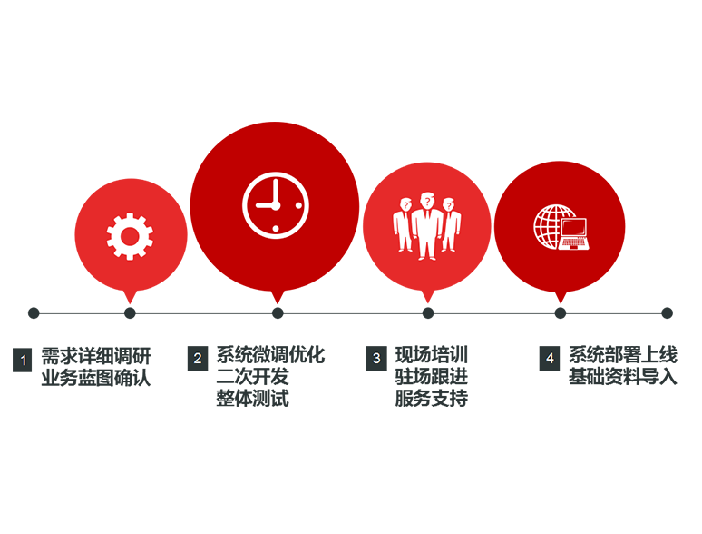

柚凡科技
首页
产品介绍
服务保障
成功案例
联系我们
关于我们
服务保障
好产品 重服务 亲客户，极端摇篮式服务
服务保障
客服保障
"一站式"服务
专业服务团队针对产品相关问题的诊断指导服务
免费提供现场或远程信息化应用培训
可在线客服、电子邮件、传真等多种方式受理业务咨询
技术保障
十五年甲方从业经历
亲历零售变革和鞋服行业信息化建设
7x24极端摇篮式服务
雄厚的架构基础应对各种业务变化
实施保障
经验丰富的实施工程师上门实施系统
定期回访，沟通使用状况及新功能的实时升级
QQ、微信、电话多维度服务
提供在线文档资料下载和视频教程观看
实施服务流程
洽谈沟通
确定合同
现场调研
系统配置.调整
预约上线
资料整理录入
现场培训.持续跟进
驻场实施
